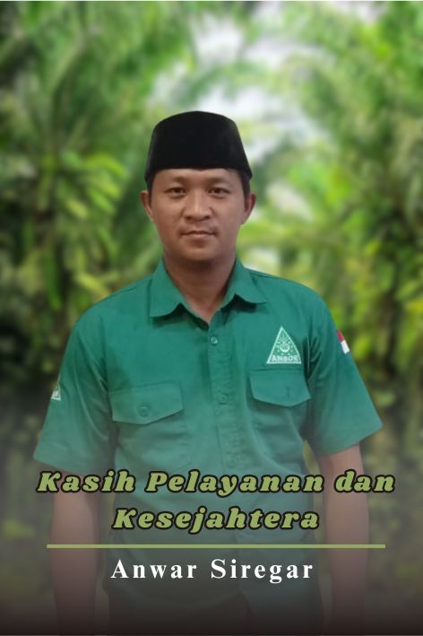
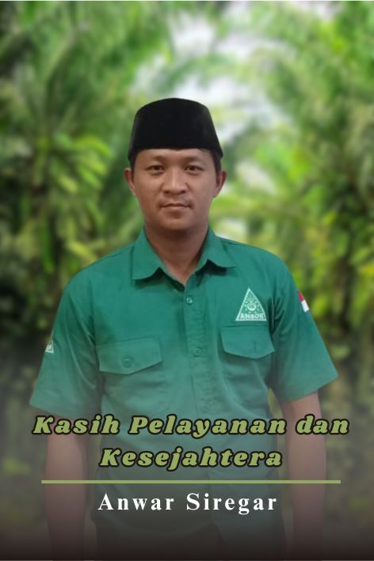

Profil Desa
Desa Karang Tengah adalah sebuah desa yang terletak di Kecamatan Serba Jadi, Kabupaten Serdang Bedagai, Sumatra Utara. Desa ini dikelilingi oleh perkebunan kelapa sawit dan karet yang membentang luas, yang merupakan sumber mata pencaharian utama bagi sebagian besar penduduknya. Dengan topografi yang relatif datar, kondisi geografisnya sangat mendukung aktivitas pertanian dan perkebunan
Potensi dan Kehidupan Masyarakat
Selain mengandalkan perkebunan, masyarakat Desa Karang Tengah juga memanfaatkan lahan untuk budidaya tanaman palawija dan hortikultura. Sektor peternakan juga berkembang, terutama ternak sapi dan kambing. Kehidupan sosial di sini sangat kental dengan nilai-nilai kekeluargaan dan gotong royong, yang tercermin dalam berbagai kegiatan sehari-hari dan acara adat. Desa ini juga memiliki beberapa fasilitas umum, seperti sekolah dasar, Masjid, dan pusat kesehatan masyarakat (puskesmas pembantu).
Akses dan Jarak Tempuh
Akses menuju Desa Karang Tengah cukup mudah, meskipun jalannya didominasi oleh jalan desa yang sebagian besar berupa aspal dan sedikit jalan tanah. Desa ini berjarak sekitar 25 kilometer dari pusat kota Tebing Tinggi dan sekitar 60 kilometer dari Kota Medan, ibu kota Provinsi Sumatra Utara. Waktu tempuh dari Medan bisa memakan waktu sekitar 1,5 hingga 2 jam, tergantung kondisi lalu lintas.
Statistik Desa
969 Laki-laki | 961 Perempuan
Aparatur Desa


 
